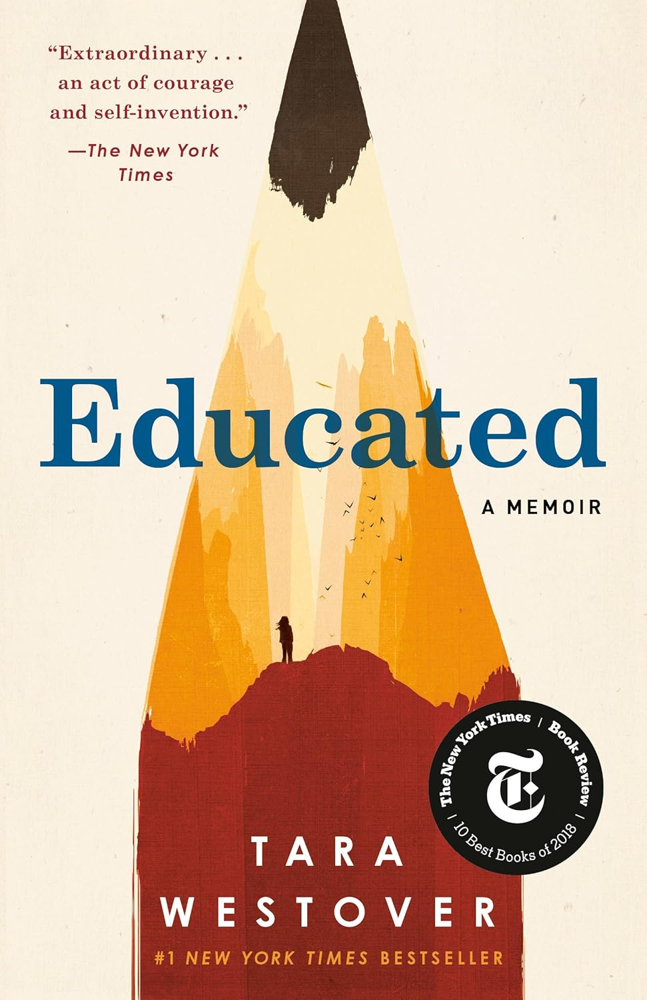

This summer, I traveled to Tokyo and Izu with friends. These are two very different cities. Tokyo is bustling and crowded, a true metropolis. But Izu feels more like a scene from a Japanese anime—a quiet, warm countryside.
My favorite restaurant is Oleana in Cambridge, Massachusetts. This Mediterranean restaurant offers an incredible dining experience with its innovative Middle Eastern cuisine and warm, intimate atmosphere. The outdoor garden seating is absolutely magical, especially during summer evenings. I'm particularly drawn to their creative use of spices and fresh ingredients, and their lamb dishes are simply outstanding. The service is impeccable, and every visit feels like a special occasion.
My favorite food is hot pot! I like gathering around a steaming hot pot with friends during cold winters. I usually choose fresh beef slices, tofu, mushrooms, and various vegetables. I enjoy dipping the ingredients in the pot and then dipping them in special sesame sauce and garlic paste.
| Book Title | Cover | Author | Summary |
|---|---|---|---|
| "Little Women" | |
Louisa May Alcott | A classic coming-of-age story following the lives of four sisters during the American Civil War, exploring themes of family, love, and personal growth. |
| "A Room of One's Own" | |
Virginia Woolf | A feminist essay exploring the relationship between women and literature, arguing for the necessity of financial independence and personal space for women writers. |
| "One Hundred Years of Solitude" | |
Gabriel García Márquez | A masterpiece of magical realism that describes the legendary story of seven generations of the Buendía family. |
| "Educated" |  | Tara Westover | A powerful memoir about a woman who grows up in a survivalist family in rural Idaho and eventually earns a PhD from Cambridge University. |